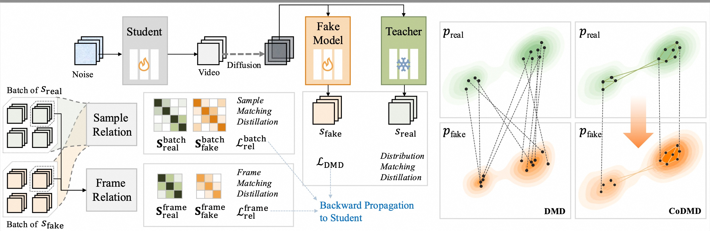
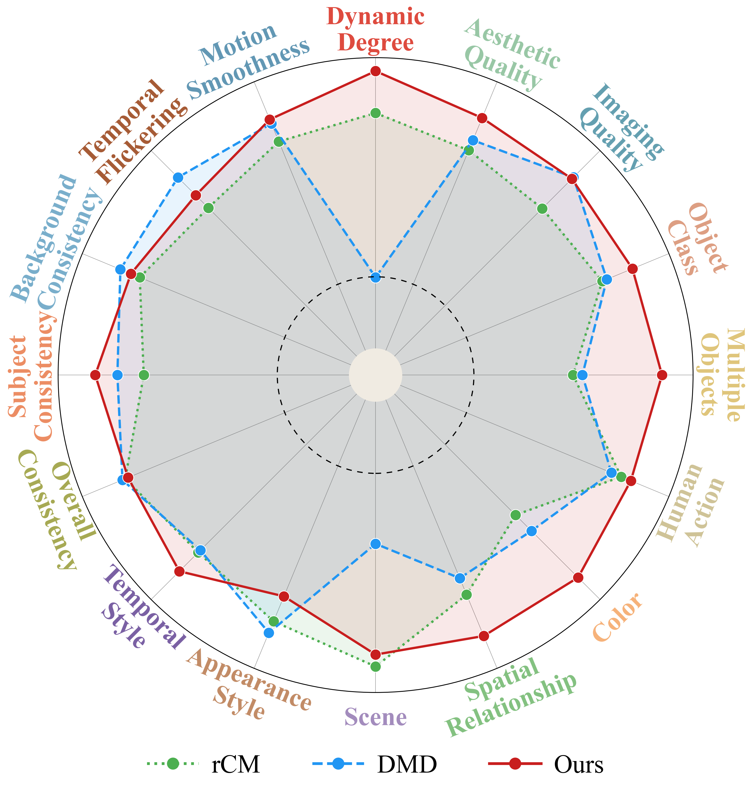
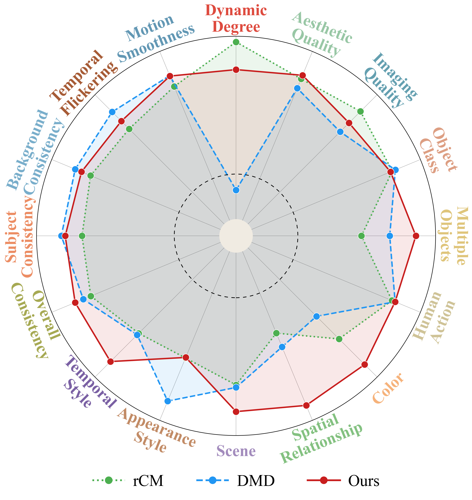

CoDMD: Copula-aware Distribution Matching
Distillation for Fast Video Generation
1HKUST 2Wan Team, Alibaba Group 3Tsinghua University 4CUHK 5Xidian University
*Project Leader †Corresponding Author
A lightweight relational regularizer that makes your DMD motion-smoother, color-faithful, and instruction-precise.
Student [CoDMD(Ours), DMD, rCM]: 4-step generation, w/o CFG | Teacher: Wan-2.1 T2V 14B, 50 steps + CFG (2× compute)
Method
Standard DMD minimizes reverse-KL with coordinate-wise score differences, imposing no constraint on relational geometry across batch elements or temporal frames. CoDMD introduces a copula-aware regularizer that reuses score estimates from the frozen teacher and online fake model to construct pairwise relation matrices, matched through a supplementary distributional objective — requiring no additional networks, datasets, or sampling trajectories.

Generated Videos
🎨 More Vivid Colors
🧩 Precise Instruction Following
🏃 Coherent Action Dynamics
🎥 Smooth Camera Motion
VBench Results
CoDMD distills Wan-2.1-T2V models at 1.3B & 14B scales into 4-step students, achieving VBench total scores of 84.46 & 84.87 — outperforming trajectory-based (rCM: 82.81 & 84.05) and distribution-based (DMD: 83.38 & 83.81) methods.
Wan-2.1-T2V 1.3B

Wan-2.1-T2V 14B

Contact Us
Feel free to contact Wenhu Zhang at wenhuzhang98@gmail.com for any question, cooperation, and communication.
Citation
If you find this work useful, please consider citing:
@article{codmd2026,
title={CoDMD: Copula-Aware Distribution Matching Distillation for Video Generation},
author={Zhang, Wenhu and Cheng, Kun and Wang, Changyuan and Li, Shiyao and Zhang, Yuechen and Li, Wenbo and Zha, Jiajun and Zhang, Jingyi and Zhao, Kang and Jia, Jiaya},
journal={arXiv preprint},
year={2026}
}